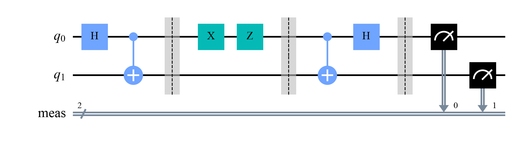

Quantum Computing
 about 10 min
about 10 min qc-w5d2.ipynb
qc-w5d2.ipynb
Superdense coding
Send two classical bits by sending one qubit: a shared Bell pair, one gate from Alice, and Bob's Bell circuit run backwards.
In this lesson you will
- Encode two bits with I, X, Z or both on one half of a Bell pair
- Decode them with a CNOT and an H, and explain why it always works
- Explain why a spy who catches the qubit learns nothing
Warm-up
1 minTwo for the price of one

One qubit, measured, gives one bit. So it seems a qubit can carry at most one bit of message. Yesterday, two bits plus a Bell pair carried one qubit. Today the same ingredients run the other way round: one qubit plus a Bell pair carries two bits.
Big idea
3 minFour gates, four Bell states
Alice and Bob share from earlier. Alice keeps q0; Bob holds q1. To send two bits, Alice applies one of four gates to her qubit only:
| Message (as Qiskit prints it) | Alice applies | The pair becomes |
|---|---|---|
| 00 | nothing | |
| 01 | Z | |
| 10 | X | |
| 11 | X, then Z | (up to a sign) |
These four Bell states are orthogonal: completely different from each other, so they can be told apart with certainty. Alice sends her single qubit to Bob. Now he holds both, and runs the Bell circuit backwards: a CNOT, then H. That turns each Bell state into one basis state, and his measurement reads the two bits.
Why it doesn't break the "one bit per qubit" rule: the second qubit was delivered earlier, inside the Bell pair. Count everything: one shared Bell pair plus one qubit sent gives two bits. Teleportation is the mirror image: one shared Bell pair plus two bits sent gives one qubit.
A built-in privacy: the traveling qubit, on its own, is a fair coin for all four messages. A spy who catches it learns nothing, and if she measures it, she breaks the pair and Bob gets wrong results, which Alice and Bob can notice.
Entanglement shared in advance doubles what one qubit can carry: two bits per qubit sent.
Play
3 minSend a message
Pick two bits and press the step button four times. Watch the amplitudes: the four messages give four different Bell states, and Bob's two gates turn each into a single bar.
Try this
Send all four messages. Then switch on Eve and send ten more: her reading is a coin flip that tells her nothing, and Bob gets about half of the messages wrong. Which of the two bits gets scrambled?
Code
2 minSuperdense coding in Qiskit
The notebook for this lessonEvery code cell below, with what it printed, is in
qc-w5d2.ipynb. To change the code and run it yourself, open the notebook in Google Colab (free, in your browser) or download it for your own Jupyter.import numpy as np
from qiskit import QuantumCircuit, transpile
from qiskit.quantum_info import Statevector, partial_trace
from qiskit.primitives import StatevectorSampler
def encode(message):
"""The shared Bell pair, then Alice's gate on her qubit q0. message = two bits, as Qiskit prints them."""
qc = QuantumCircuit(2)
qc.h(0)
qc.cx(0, 1) # the Bell pair: q0 for Alice, q1 for Bob
qc.barrier()
if message[0] == "1":
qc.x(0) # the left bit decides X...
if message[1] == "1":
qc.z(0) # ...and the right bit decides Z
qc.barrier()
return qc
def superdense(message):
qc = encode(message)
qc.cx(0, 1) # Bob, after receiving q0: the Bell circuit backwards
qc.h(0)
qc.measure_all()
return qc
superdense("11").draw("mpl", style="clifford")What it printed in the notebook
sampler = StatevectorSampler(seed=1)
for message in ["00", "01", "10", "11"]:
counts = sampler.run([superdense(message)], shots=1000).result()[0].data.meas.get_counts()
print(f"Alice sends {message} -> Bob reads {counts}")What it printed in the notebook
Alice sends 00 -> Bob reads {'00': 1000}
Alice sends 01 -> Bob reads {'01': 1000}
Alice sends 10 -> Bob reads {'10': 1000}
Alice sends 11 -> Bob reads {'11': 1000}states = {m: Statevector(encode(m)) for m in ["00", "01", "10", "11"]}
for m, sv in states.items():
print(m, "->", np.round(sv.data.real, 3) + 0.0, " (amplitudes of 00, 01, 10, 11)")
overlaps = np.array([[abs(states[a].inner(states[b])) ** 2 for b in states] for a in states])
print("\n|<a|b>|^2 for every pair of messages:")
print(np.round(overlaps, 3) + 0.0)What it printed in the notebook
00 -> [0.707 0. 0. 0.707] (amplitudes of 00, 01, 10, 11) 01 -> [ 0.707 0. 0. -0.707] (amplitudes of 00, 01, 10, 11) 10 -> [0. 0.707 0.707 0. ] (amplitudes of 00, 01, 10, 11) 11 -> [ 0. -0.707 0.707 0. ] (amplitudes of 00, 01, 10, 11) |<a|b>|^2 for every pair of messages: [[1. 0. 0. 0.] [0. 1. 0. 0.] [0. 0. 1. 0.] [0. 0. 0. 1.]]
Your turn
2 minYour turn: Eve's view
Eve catches the qubit on its way. Compute the state of q0 alone for each message with partial_trace. Can she tell the messages apart?
for message, sv in states.items():
eve_view = None # TODO: partial_trace(sv, [1]) keeps q0 and averages over q1
print(message, eve_view)Need a hint?
partial_trace(sv, [1]) removes qubit 1 (Bob's) and leaves q0's density matrix. You met it in yesterday's notebook.
Show a solution
for message, sv in states.items():
eve_view = partial_trace(sv, [1])
print(message, "Eve's qubit:", (np.round(eve_view.data.real, 3) + 0.0).tolist())
print("The same matrix I/2 for every message: Eve sees a fair coin and learns nothing.\n")
# Bonus: what if Eve measures the qubit? Then Bob's second bit becomes a coin flip.
from qiskit_aer import AerSimulator
from qiskit import ClassicalRegister
spied = encode("01")
eve = ClassicalRegister(1, "eve")
spied.add_register(eve)
spied.measure(0, eve[0]) # Eve measures q0 in the middle of the trip
spied.cx(0, 1)
spied.h(0)
spied.measure_all()
sim = AerSimulator(seed_simulator=3)
counts = sim.run(transpile(spied, sim), shots=1000).result().get_counts()
bob = {}
for key, n in counts.items():
bob_bits = key.split()[0] # registers print right to left: "meas eve"
bob[bob_bits] = bob.get(bob_bits, 0) + n
print("Alice sent 01 with Eve listening; Bob reads:", bob)What it printed in the notebook
00 Eve's qubit: [[0.5, 0.0], [0.0, 0.5]]
01 Eve's qubit: [[0.5, 0.0], [0.0, 0.5]]
10 Eve's qubit: [[0.5, 0.0], [0.0, 0.5]]
11 Eve's qubit: [[0.5, 0.0], [0.0, 0.5]]
The same matrix I/2 for every message: Eve sees a fair coin and learns nothing.
Alice sent 01 with Eve listening; Bob reads: {'00': 483, '01': 517}Check yourself
1 minQuick check
Question 1 of 3
Alice wants to send 10 (as Qiskit prints it). What does she apply to her qubit?
Question 2 of 3
Why can Bob always decode the message correctly?
Question 3 of 3
Teleportation and superdense coding both use a shared Bell pair. Which sentence is right?
Wrap-up
1 minToday in one sentence
Quantum link
Bob's decoder is a Bell measurement: it asks "which of four orthogonal states is this?", a four-class classification with zero error. Quantum classifiers face the same question with states that are not orthogonal, where some error is unavoidable. How small it can be is the subject of week 6 (fidelity and the Helstrom bound) and of the Quantum ML tutorial's last week.
Go deeper (optional)
Nielsen and Chuang, section 2.3 ("Application: superdense coding"). The protocol was proposed by Bennett and Wiesner in 1992, a year before teleportation.
Next in Quantum Computing: phase kickback, and the first algorithm that beats every classical one.

That's the lesson!
Tap the button to save it. Short and steady wins.
Marked by mistake? Undo